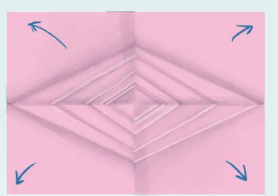

<!DOCTYPE html>
<html lang="en">
<head>
<meta charset="UTF-8">
<meta name="viewport" content="width=device-width,initial-scale=1">
<title>SUMMARY — Quadrilaterals</title>
<meta name="description" content="Class 8 Mathematics · Part 1 · Quadrilaterals · SUMMARY">
<link rel="icon" href="data:image/svg+xml,<svg xmlns='http://www.w3.org/2000/svg' viewBox='0 0 100 100'><text y='.9em' font-size='90'>📘</text></svg>">
<link rel="stylesheet" href="../../../assets/book.css">
<link rel="stylesheet" href="https://cdn.jsdelivr.net/npm/katex@0.16.11/dist/katex.min.css" crossorigin="anonymous">
</head>
<body>
<header class="topbar">
<div class="topbar-in">
  <div class="crumb">
    <span class="c1"><a href="../../../index.html">Library</a> · <a href="../../index.html">Class 8 Mathematics · Part 1</a></span>
    <span class="c2">Quadrilaterals · SUMMARY</span>
  </div>
  <a class="tb-btn" data-nav="prev" href="../../04-quadrilaterals/16-figure-it-out/index.html" title="Figure it Out">←</a>
  <details class="drawer"><summary class="tb-btn" title="Sections in this chapter">☰</summary>
<div class="drawer-panel"><div class="dh">Quadrilaterals</div><a href="../01-chapter-opener/index.html">Chapter opener</a><a href="../02-rectangles-and-squares-4.1/index.html">4.1 Rectangles and Squares</a><a href="../03-a-carpenter-s-problem/index.html">A Carpenter’s Problem</a><a href="../04-the-process-of-finding-properties/index.html">The Process of Finding Properties</a><a href="../05-a-special-rectangle/index.html">A Special Rectangle</a><a href="../06-properties-of-a-square/index.html">Properties of a Square</a><a href="../07-figure-it-out/index.html">Figure it Out</a><a href="../08-angles-in-a-quadrilateral-4.2/index.html">4.2 Angles in a Quadrilateral</a><a href="../09-more-quadrilaterals-with-parallel-opposite-sides-4.3/index.html">4.3 More Quadrilaterals with Parallel Opposite Sides</a><a href="../10-quadrilaterals-with-equal-sidelengths-4.4/index.html">4.4 Quadrilaterals with Equal Sidelengths</a><a href="../11-figure-it-out/index.html">Figure it Out</a><a href="../12-playing-with-quadrilaterals-4.5/index.html">4.5 Playing with Quadrilaterals; Geoboard Activity</a><a href="../13-joining-triangles/index.html">Joining Triangles</a><a href="../14-kite-and-trapezium-4.6/index.html">4.6 Kite and Trapezium; Kite</a><a href="../15-trapezium/index.html">Trapezium</a><a href="../16-figure-it-out/index.html">Figure it Out</a><a href="../17-summary/index.html" aria-current="page">SUMMARY</a><a href="../18-figure-it-out/index.html">Figure it Out</a><a href="../19-figure-it-out/index.html">Figure it Out</a><a href="../20-figure-it-out/index.html">Figure it Out</a></div></details>
  <a class="tb-btn" data-nav="next" href="../../04-quadrilaterals/18-figure-it-out/index.html" title="Figure it Out">→</a>
  <button class="tb-btn" data-theme-toggle title="Toggle light / dark" aria-label="Toggle light or dark theme">◐</button>
</div>
<div class="progress"><span style="width:59.7%"></span></div>
</header>
<main class="wrap">
<div class="sec-head">
  <p class="eyebrow"><a href="../index.html">Chapter 4 · Quadrilaterals</a></p>
  <h1>SUMMARY</h1>
  <p class="sec-meta">Textbook pages 28–31 · 10 figures</p>
</div>
<article class="prose">
<p>„ A rectangle is a quadrilateral in which the angles are all \(90 ^{\circ}\) .</p>
<p>Properties of a rectangle -</p>
<p>y Opposite sides of a rectangle are equal. y Opposite sides of a rectangle are parallel to each other. y Diagonals of a rectangle are of equal length and they bisect each other.</p>
<p>„ A square is a quadrilateral in which all the angles are \(90 ^{\circ}\) , and all the sides are of equal length.</p>
<p>Properties of a square -</p>
<p>y The opposite sides of a square are parallel to each other. y The diagonals of a square are of equal lengths and they bisect each other at \(90 ^{\circ}\) . y The diagonals of a square bisect the angles of the square.</p>
<p>„ A parallelogram is a quadrilateral in which opposite sides are parallel.</p>
<p>Properties of a parallelogram -</p>
<p>y The opposite sides of a parallelogram are equal. y In a parallelogram, the adjacent angles add up to \(180 ^{\circ}\) , and the opposite angles are equal. y The diagonals of a parallelogram bisect each other.</p>
<p>„ A rhombus is a quadrilateral in which all the sides have the same length.</p>
<figure class="fig wide"></figure>
<figure class="fig wide"></figure>
<p>Properties of a rhombus -</p>
<p>y The opposite sides of a rhombus are parallel to each other. y In a rhombus, the adjacent angles add up to \(180 ^{\circ}\) , and the opposite angles are equal. y The diagonals of a rhombus bisect each other at right angles. y The diagonals of a rhombus bisect its angles.</p>
<p>„ A kite is a quadrilateral with two non-overlapping adjacent pairs of sides having the same length.</p>
<p>„ A trapezium is a quadrilateral having at least one pair of parallel opposite sides.</p>
<p>„ The sum of the angle measures in a quadrilateral is \(360 ^{\circ}\) .</p>
<aside class="sidenote"><p>Trapezium</p></aside>
<p>Kite</p>
<aside class="sidenote"><p>Rectangle</p><p>Parallelogram</p></aside>
<p>Square Rhombus</p>
<figure class="fig wide"></figure>
<h2 id="s-which-quad">Which Quad?</h2>
<p>Gameplay</p>
<ul class="qlist">
<li><span class="mk">1.</span><span class="lt">Fold a sheet into half.</span></li>
<li><span class="mk">2.</span><span class="lt">Now, fold it once more into a quarter.</span></li>
<li><span class="mk">3.</span><span class="lt">Make a triangular crease at the corner</span></li>
</ul>
<p>that is at the middle of the paper.</p>
<ul class="qlist">
<li><span class="mk">4.</span><span class="lt">Open the sheet. What is the shape</span></li>
</ul>
<p>formed by the creases?</p>
<ul class="qlist">
<li><span class="mk">5.</span><span class="lt">How would you fold the quarter paper to get the kinds of creases</span></li>
</ul>
<p>shown in the following image.</p>
<figure class="fig"></figure>
<ul class="qlist">
<li><span class="mk">6.</span><span class="lt">How would you fold the quarter paper such that a square is formed?</span></li>
</ul>
<figure class="fig wide"></figure>
<h2 id="s-quadrilaterals">QUADRILATERALS</h2>
<figure class="fig"></figure>
<p>(Figures shown are merely indicative.)</p>
<p>Page No. 94</p>
</article>
<nav class="pager"><a class="" data-nav="prev" href="../../04-quadrilaterals/16-figure-it-out/index.html"><span class="dir">← Previous</span><span class="t">Figure it Out</span><span class="ch">Quadrilaterals</span></a><a class="nx" data-nav="next" href="../../04-quadrilaterals/18-figure-it-out/index.html"><span class="dir">Next →</span><span class="t">Figure it Out</span><span class="ch">Quadrilaterals</span></a></nav>
</main><footer class="site">Generated from the source textbook PDFs · text, figures and exercises belong to their respective publishers.</footer><script defer src="https://cdn.jsdelivr.net/npm/katex@0.16.11/dist/katex.min.js" crossorigin="anonymous"></script>
<script defer src="https://cdn.jsdelivr.net/npm/katex@0.16.11/dist/contrib/auto-render.min.js" crossorigin="anonymous"
  onload="renderMathInElement(document.body,{delimiters:[
    {left:'\\(',right:'\\)',display:false},
    {left:'$$',right:'$$',display:true},
    {left:'\\[',right:'\\]',display:true}],throwOnError:false,ignoredTags:['script','noscript','style','textarea','pre','code']})"></script>
<script src="../../../assets/book.js"></script>
<script defer src="../../../../assets/search.js?v=1789782769"></script>
<script defer src="../../../../assets/screenshot.js?v=2"></script>
</body>
</html>
